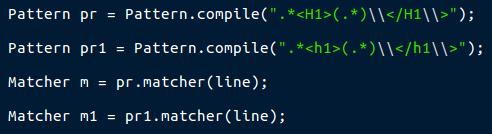

La classe BufferedWriter écrit du texte vers un flux de sortie de caractéres,mettant en mémoire tampo les caractéres pour une écriture efficace de caractéres, de tableaux et de chaines de caractéres.
On parcourant le jeu de donnée d'une maniére recurssive on s'asure qu'on parcour dynamiquement notre jeu , on prendrenant compte le fait que les données pourront être situées à un emplacement quelconque
 La première étape est de définir le motif que l'on veut utiliser et créer une instance de la classe Pattern avec ce motif. La classe Pattern ne propose pas de constructeur, on obtient une instance de la classe grâce à la méthode de classe compile qui prend comme unique paramètre le motif sous forme d'un objet String.
Une fois que le motif est compilé, il faut créer un objet de type Matcher pour interroger des chaines de caractères. La classe Matcher ne propose pas de constructeur non plus, on crée une instance de cette classe grâce à la méthode matcher de la classe Pattern. Cette méthode prend comme unique paramètre la chaine cible que l'on souhaite interroger.
c’est un mécanisme puissant de sauvegarde d’objet sur fichier. Pour qu’un objet soit se-rialisable, il faut que sa classe d’appartenance implemente l’interface java.io.Serializable, Et que l’ensemble de ses attributs soient eux-mêmes serialisabllaes. - on utilise la Serialization pour réaliser la Phase 2 du projet. - on a sauvegardé une java.util.ArrayList, pour une utilisation a n’importe quel instant t.
-on utilise la DéSerialization pour réaliser la Phase 3 du projet. -on récupere le contenu du fichier Sérializer de la Phase précedente on utilisant une ArrayList.puis on aplique notre algorithme de recherche sur notre ArrayList.